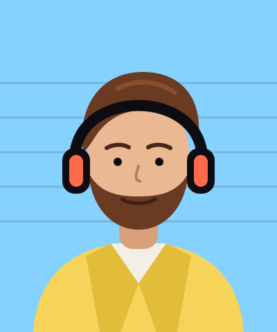

Nadia Ferreira
An industrial designer who spent twelve years designing kettles, toasters and one very famous stand mixer. She can tell you what a product cost to make by tapping it, and she will.
- A walnut desk organiser, slowly
Hosts & story
Overtone started as a running argument between a designer and a journalist about who really makes things. Sixty-two episodes later, neither of them has won.
An industrial designer who spent twelve years designing kettles, toasters and one very famous stand mixer. She can tell you what a product cost to make by tapping it, and she will.

A science journalist and former public radio producer. Ten years of cutting tape taught him that the best part of an interview is usually the bit after the guest says “this probably isn’t interesting, but…”.
The story so far
We record in the back room of Fischer & Sons Piano Repair on Frankford Avenue. Mr. Fischer tunes pianos out front, so we schedule around him.
At a friend’s wedding, Nadia and Eli spend three hours arguing about who designed the wedding venue’s chairs. They decide to find out, with microphones.
“The Chair That Took Nine Years” goes out to 212 listeners, most of them related to the hosts.
Adaeze Nwosu plays a violin made from a fallen maple, live in the studio. The clip is shared 40,000 times in a week.
Ninety people, borrowed chairs and a question from a nine-year-old that we still think about.
Season three is funded by listeners and a small number of sponsors we actually use. We hire Rosa Lindgren as producer.
Sixteen new episodes, our first transcripts for every show and 48,000 downloads per episode.
How an episode gets made
01 · 20 hours
We read everything the guest has published, call two people who know them and visit their workshop if we can.
02 · 3 hours
In person whenever possible, on dynamic microphones, with the phone in another room. No script, a page of questions.
03 · 17 hours
Rosa cuts three hours down to one, Kit scores it, and the guest hears it before anyone else does.
Press
“The best interview show about making things, and it isn’t close.”
“Ferreira and Brandt have the rare gift of being curious out loud.”
“You will finish an episode and look at your doorknob differently.”
Know someone who makes something extraordinary? Or want to reach people who make things?